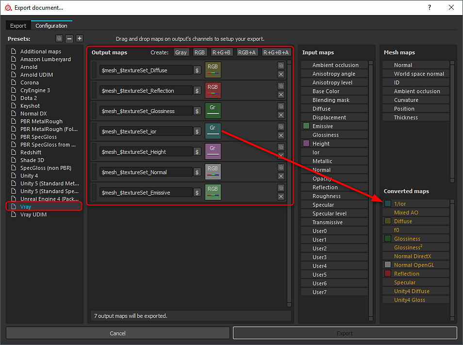
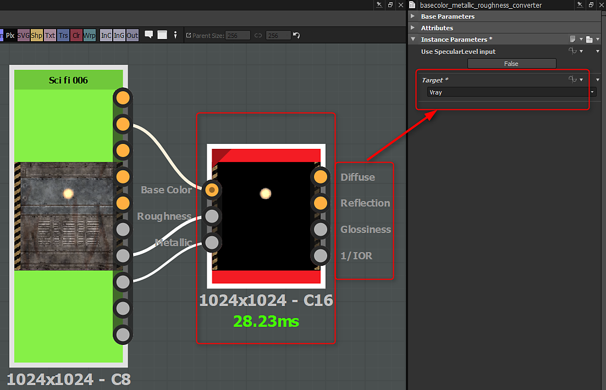

You can export the converted maps from Substance Painter. A wide range of render presets are supported and simply selecting a preset will convert the maps types. (conversion is based on the metal/rough workflow).

The Substance plugin will generate outputs and automatically create materials for specific workflows. However, with DCC applications and 3rd-party renderers, you may need to manually convert the metallic/rough outputs. The following integrations support automatic rendering workflows and will appropriately convert any map types if needed:
If you are building a custom Substance, you can create the specific outputs you need for renderers such as Vray and Corona. Using the metallic/roughness conversion node (Library>PBR Utilities), You can easily convert the base color, roughness and metallic maps to the specific renderer.
